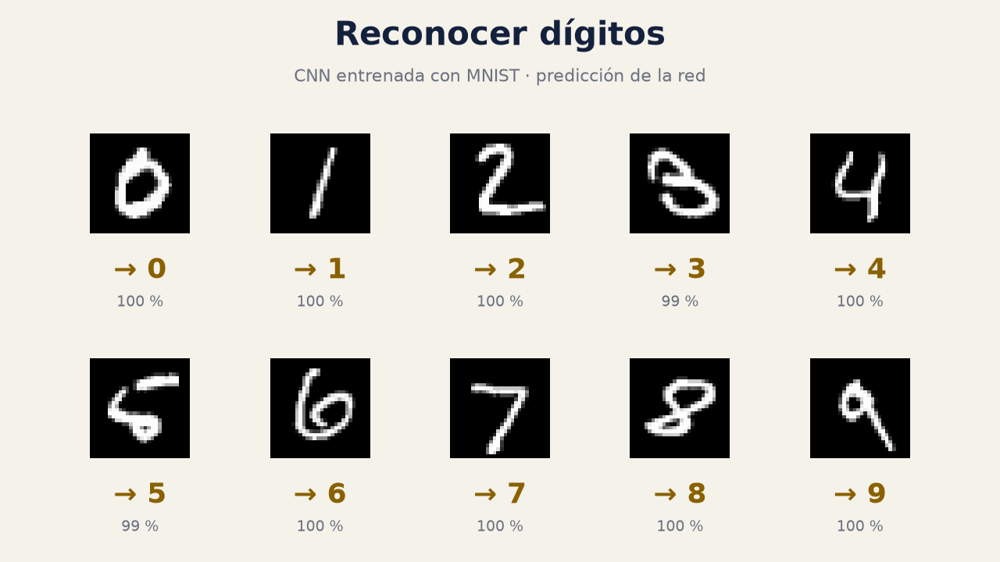
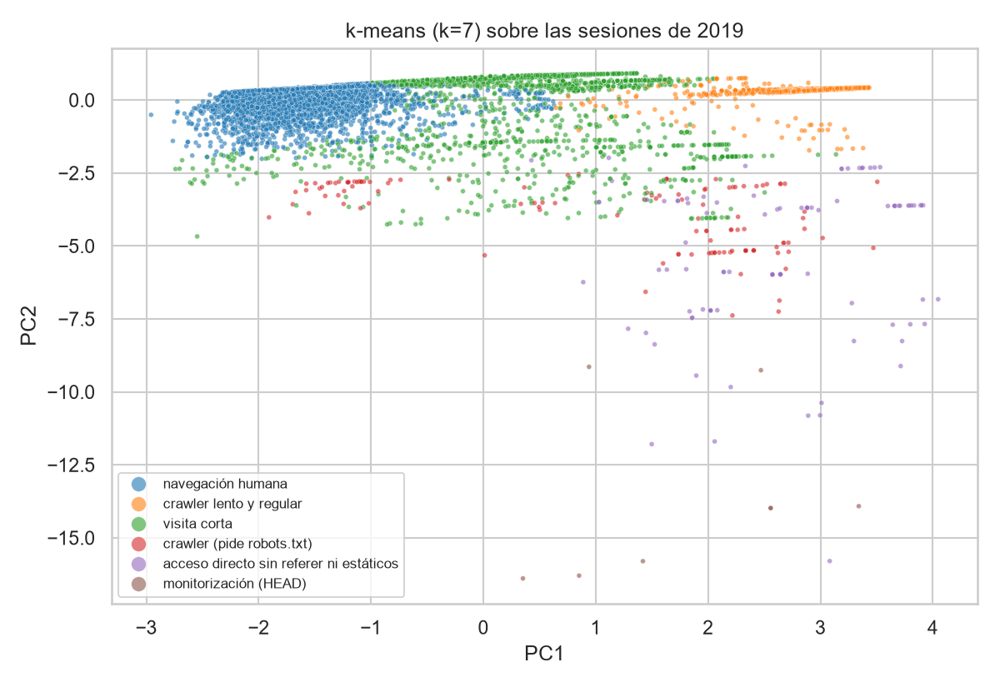

Spikes
Preguntas que me hago sobre datos, con el método y los resultados. Salen de trabajos del máster en IA y de cosas que me han dado curiosidad.
-

Reconocer dígitos
Una red convolucional entrenada con MNIST que adivina el número que dibujas o subes, ejecutada entera en tu navegador.
-

Humanos frente a bots
¿Se puede distinguir el tráfico humano del de los bots en una web solo por cómo se comportan las visitas?